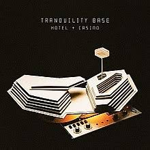

Welcome to the official site for the Arctic Monkeys


Welcome to the official site for the Arctic Monkeys
Arctic Monkeys are an English rock band formed in 2002 in High Green, a suburb of Sheffield. The band consists of Alex Turner (lead vocals, guitar), Matt Helders (drums, vocals), Jamie Cook (guitar) and Nick O'Malley (bass, backing vocals). Former band member Andy Nicholson (bass guitar, backing vocals) left the band in 2006 shortly after their debut album was released. They have released six studio albums: Whatever People Say I Am, That's What I'm Not (2006), Favourite Worst Nightmare (2007), Humbug (2009), Suck It and See (2011), AM (2013), and Tranquility Base Hotel & Casino (2018), as well as one live album, At the Apollo (2008). Their debut album is the fastest-selling debut album by a band in UK chart history, and in 2013, Rolling Stone ranked it the 30th-greatest debut album.[1][2] The band has won seven Brit Awards – winning both Best British Group and Best British Album three times, and have been nominated for three Grammy Awards.[3][4] They also won the Mercury Prize in 2006 for their debut album, in addition to receiving nominations in 2007, 2013 and 2018[5] The band have headlined at the Glastonbury Festival twice, in 2007 and again in 2013. Arctic Monkeys were heralded as one of the first bands to come to public attention via the Internet, with commentators suggesting they represented the possibility of a change in the way in which new bands are promoted and marketed.[
Stream or Download Arctic Monkey's new album 'Tranquility Base Hotel+ Casino' from the link below
Stream/Download